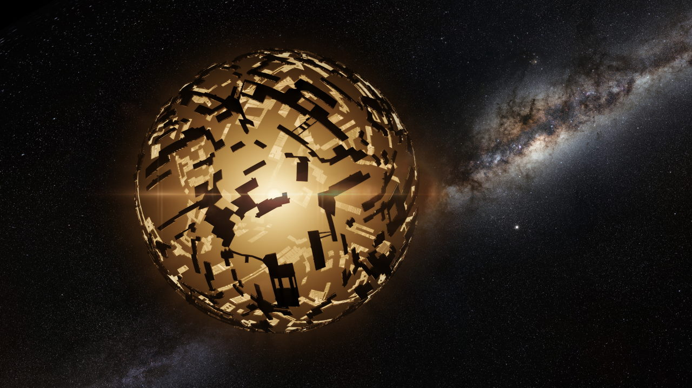

Сфера дайсона

Сфера дайсона - гіпотетичний астроінженерний проєкт, запропонований Фріменом Дайсоном 1960 року в статті
«Пошуки штучних зоряних джерел інфрачервоного випромінювання» в науковому журналі «Science». Є відносно тонкою
сферичною оболонкою великого радіусу (порядку радіуса орбіти планети) із зорею в центрі.
Пошук Сфер Дайсона вважається перспективним напрямом програми SETI. Споруда цих масштабів може бути виявлена за
ІЧ-випромінюванням з нетиповим спектральним розподілом. Для пошуку сфер Дайсона планується використати телескоп
Спітцер.
Похідні проєкти
Кільце Нівена, Світ-кільце — жорстке кільце невеликої ширини, яке оточує зорю.
Вперше описане в науково-фантастичному романі Ларрі Нівена «Світ-кільце» (1970).
Раковина Покровського — альтернатива сфері Дайсона, запропонована Георгієм Покровським у 1973 році. Є
системою кілець різного діаметра, розташованими так, щоб перехоплювати все випромінювання зорі. Якщо
подивитися на цю систему кілець ззовні, вона буде схожа на раковину з двома розтрубами, оберненими в різні
боки, через які можуть входити і виходити міжзоряні кораблі.
Рій Дайсона — система супутників, які обертаються навколо зорі, вловлюючи її випромінювання.
Супутники
можуть мати різну форму та розміри, а «рій» з них формуватися поступово протягом тривалого періоду часу.
Крім того, для передачі енергії можливі використання різних форм бездротової передачі енергії. У разі, якщо
супутники утворюють чітке кільце, така формація має назву «кільце Дайсона»
Бульбашка Дайсона — система супутників із сонячними вітрилами, які за рахунок тиску сонячного вітру
протистоять силі тяжіння зорі. Такі супутники є стаціонарними щодо зорі.
Оболонка Дайсона — сфера Дайсона, внутрішня поверхня якої служить для проживання великої кількості людей (чи
представників інших цивілізацій).
Зоряна машина — астроінженерна конструкція, яка збирає енергію зорі для конкретної мети. Зоряна машина
Типу А, або машина Шкадова, використовує енергію зорі для створення тяги, яка рухає зоряну систему в певному
напрямі. Клас B добуває із системи енергію, наприклад, за рахунок різниці температур всередині й зовні
сфери, для здійснення механічної роботи всередині самої споруди. Клас C і збирає енергію зорі, і водночас
використовує її для руху
Мозок-матрьошка — запропонована Робертом Бредбері структура з кількох вкладених одна в одну сфер Дайсона, що
витрачає зібрану енергію на здійснення обчислень. Ідея «мозку-матрьошки» є розвитком ідеї «мозку-Юпітера» —
комп'ютера планетарних розмірів. Різні письменники пропонували кілька можливих призначень такої споруди,
зокрема для створення віртуальної реальності та моделювання цілих всесвітів
Світ-бульбашка — сферична порожниста конструкція планетарних розмірів, всередині якої міститься придатна для
дихання атмосфера, і яка служить космічним поселенням
Структура Крісвелла — варіант сфери Дайсона, внутрішня поверхня якої має фрактальну структуру, за рахунок
чого має більшу площу для приймання енергії та життя